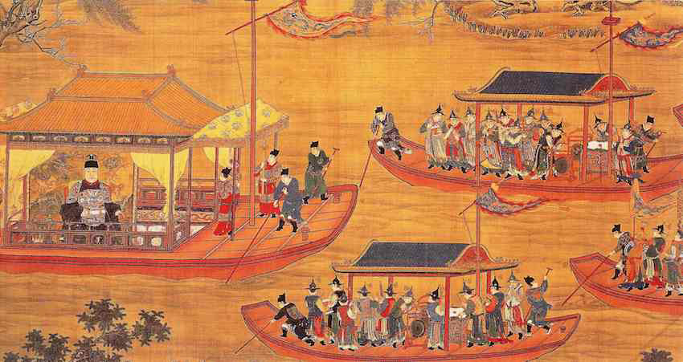

History of Dragonboat
2 millenniums

Dragon boat racing began more than 2000 years ago, where it was done as a ritual to bring good harvest to the people
The races were held at life-sustaining rivers in the valleys of southern China.